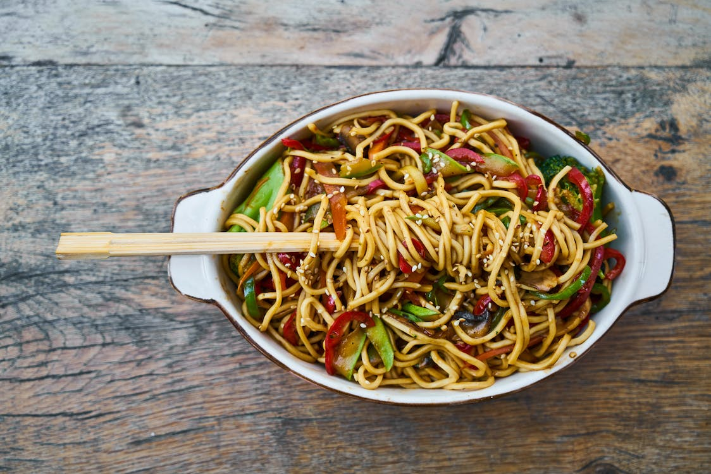

Kimchi Noodles the Gigi way! -- Easy weeknight dinner for two
By Tavis and GiGi
September 25, 2023

Kimchi Noodles
Kimchi noodles are a great weeknight meal. This recipie is a fun and easy way to use up the kimchi hiding in the back of your fridge.
This buttery amazing dish will quickly become a favorite. With only a few ingredients all of those bitchy house wives down the street will be wondering
how you keep making these absolute banger dinners.
Kimchi Noodles
What You'll need
- 5 tablespoons unsalted butter, divided
- 1 cup finely chopped kimchi, plus 1/3 cup juice
- 2 tablespoons gochujang
- 1/2 cup veggie broth
- 12 oz flat rice noodles
- 3 scallions, sliced
- 1 tablespoon sesame seeds
- Salt
Instructions:
- Heat 2 Tbsp. butter in a large skillet over medium-high. Add chopped kimchi and gochujang and cook, stirring occasionally, until kimchi is
softened and lightly caramelized, about 4 minutes. Add broth and kimchi juice and bring to a simmer. Cook until liquid is slightly reduced,
about 3 minutes.
- Meanwhile, boil noodles according to package directions.
- Using tongs, transfer noodles to skillet and add remaining 3 Tbsp. butter; cook, tossing often, until sauce coats noodles, about 2 minutes.
Season with salt if needed. Divide among bowls and top with scallions and sesame seeds.
Home